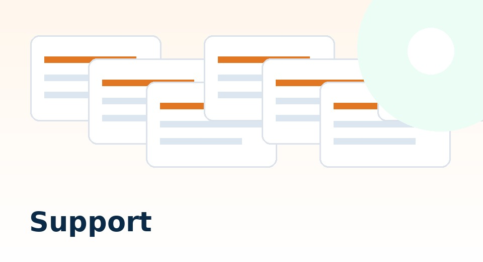

Support / Donation
寄付で活動を支える
PTA適正化推進委員会は、資料収集、公文書開示資料の整理、教育委員会回答の公開、ガイドブック更新、サイト運営を継続しています。
活動を継続するため、任意の寄付・支援を受け付けています。金額は無理のない範囲でかまいません。
外部リンク：PayPayの画面が開きます。金額・送付先・送付可否はPayPay側の表示を確認してください。

寄付金の使い道
- 資料収集教育委員会回答、公文書開示資料、PTA文書の収集・整理
- サイト運営GitHub Pages上の資料ページ、回答マップ、ガイドブックの更新
- 調査・整理作業自治体別資料、通知、会計・個人情報関係資料の分類
- 周知活動保護者・PTA役員・学校関係者・教育委員会に届く形での発信
寄付以外の支援
寄付以外にも、資料提供、情報提供、記事の共有、誤記やリンク切れの連絡は大きな支援になります。
ご提供いただきたい資料例
- PTA入会案内、入会申込書、退会届、会則、総会資料
- 学校徴収金案内、PTA会費納入案内、口座振替関係資料
- 学校アプリ・連絡ツールによるPTA通知の画面・配信文
- 教育委員会通知、学校長通知、PTAに関する校内ルール
- 職務専念義務、職専免、兼職兼業、校務分掌に関する文書
- 自治体・教育委員会からの回答、公文書開示決定通知、開示資料
公開時の注意
児童生徒・保護者・教職員個人が特定される情報は、そのまま公開しません。資料提供を受けた場合も、公開前にマスキングや引用範囲の確認を行います。
主要メニュー
重要テーマ
一次資料・回答集